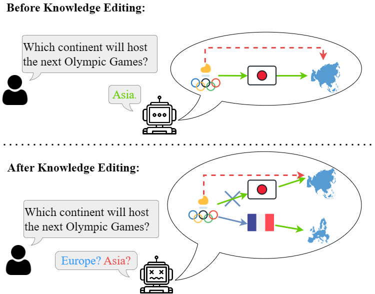

We propose VaM, an online post-training framework that uses recent value predictions as memory for general robot policies.
Yijin Chen
I am a master's student at the School of Artificial Intelligence, Shanghai Jiao Tong University (SJTU), advised by Prof. Cewu Lu and Prof. Chuan Wen. I have worked on dexterous manipulation, policy post-training, and agentic robot systems. Previously, I received my B.Eng. from SJTU's IEEE Honor Class in 2025.
My research interests lie in robot learning and embodied AI, particularly learning dexterous manipulation through vision and touch, improving robot policies with human-in-the-loop learning and efficient post-training systems, and building agentic robot systems that organize learned skills for autonomous self-improvement.
Outside research, I am a member of the SJTU badminton team and play fingerstyle guitar, with performances at university club showcases.
News
We propose RoboRSI, a robot self-improvement system based on top-down skill refinement.
FBI has been accepted by IEEE ICRA 2026.
Investigating Multi-Hop Factual Shortcuts in Knowledge Editing of Large Language Models has been accepted by ACL 2024 Main Conference.
Research
* denotes equal contribution.

Investigating Multi-Hop Factual Shortcuts in Knowledge Editing of Large Language Models
We study when language models use direct factual shortcuts instead of following a multi-hop reasoning path, and how these shortcuts affect knowledge editing.